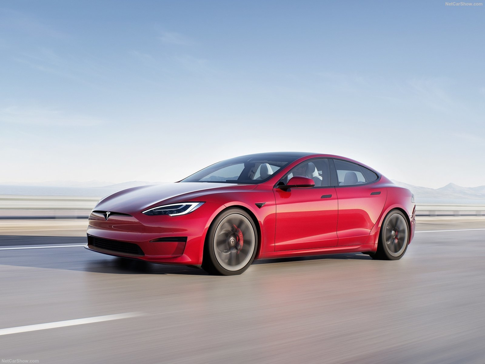
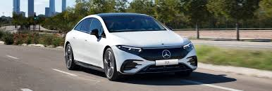
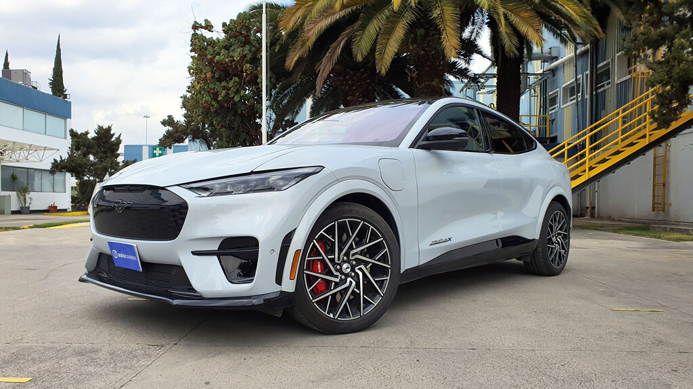

Los Mejores Carros Actuales
Las marcas de automóviles continúan innovando con nuevos modelos cada año, combinando tecnología avanzada, seguridad, y eficiencia. Aquí exploramos algunos de los carros más relevantes de la industria automotriz actual.
Tesla Model S Plaid

El Tesla Model S Plaid es uno de los automóviles eléctricos más rápidos del mundo, con una velocidad de 0 a 100 km/h en menos de 2 segundos. Su tecnología avanzada y el sistema de piloto automático lo convierten en una opción atractiva para quienes buscan lujo y sostenibilidad.
- Motor: Eléctrico de 3 motores
- Potencia: 1,020 hp
- Autonomía: 637 km (según ciclo WLTP)
- Velocidad máxima: 322 km/h
Mercedes-Benz EQS

El EQS es el buque insignia eléctrico de Mercedes-Benz. Este vehículo combina lujo, confort y una eficiencia energética superior, con una tecnología de vanguardia que incluye pantallas táctiles y un sistema de conducción autónoma avanzada.
- Motor: Eléctrico (batería de 107.8 kWh)
- Potencia: 516 hp
- Autonomía: 770 km (según ciclo WLTP)
- Velocidad máxima: 210 km/h
Ford Mustang Mach-E

El Mustang Mach-E es un SUV eléctrico que ofrece un diseño deportivo y un rendimiento impresionante. Combina la herencia de la icónica marca Mustang con una eficiencia energética sin igual, brindando una experiencia de conducción única.
- Motor: Eléctrico
- Potencia: 480 hp
- Autonomía: 490 km (según ciclo WLTP)
- Velocidad máxima: 180 km/h
Los Vehículos Híbridos y Eléctricos: El Futuro de la Movilidad
Con el creciente enfoque en la sostenibilidad, los vehículos híbridos y eléctricos están tomando un papel cada vez más relevante en la industria automotriz. Marcas como Tesla, Mercedes-Benz y Ford están liderando la transición hacia una movilidad más limpia y eficiente.